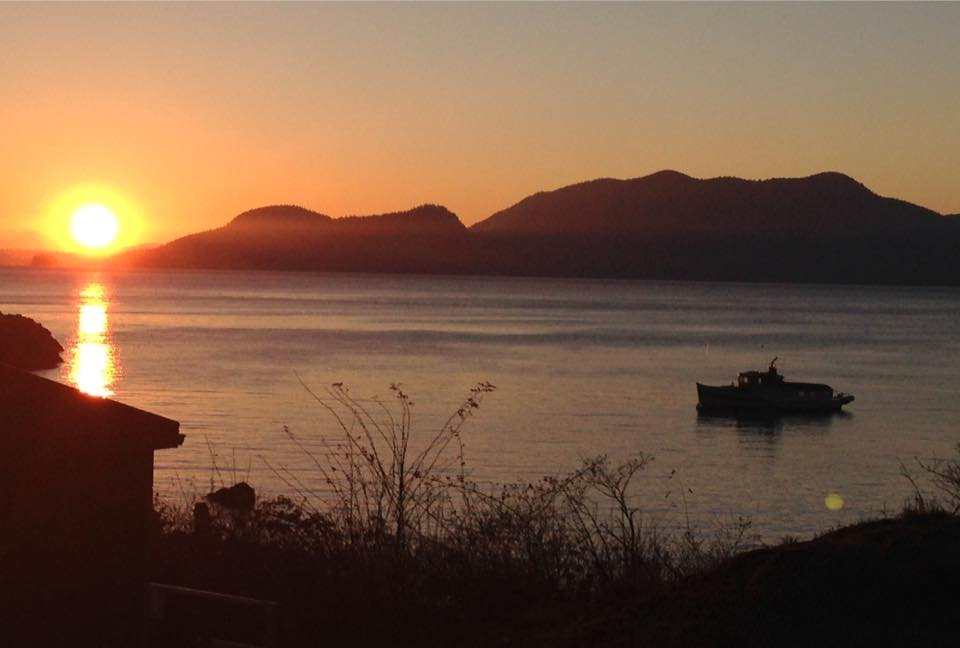

Doe Bay
An Old School Hot Springs Resort

Welcome to a gem on the edge of the bay in Olga,
Washington. More to follow. And here you are!
Located in the beautiful San Juan Islands, Doe Bay
is the perfect spot to relax, rejuvenate and play!
Doe Bay is a 2-night minimum resort, with 3 or 4-night
minimum on select holiday weekends. Open and active
year round, there is something of interest for
everyone:
Ocean-side salt water soaking tubs sunbathing and sauna
at our clothing optional Doe Bay Spa and Serenity Gardens
Onsite massage therapy tailored by our licensed therapists
to meet your therapeutic needs and goals
Award-winning Cafe with dishes crafted from the finest
seasonal organic ingredients harvested from Doe Bay's
own Garden and surrounding local farms
Live Music in our Doe Bay Café and Yoga Studio, not to
mention our regionally famous Doe Bay Fest music festival
in August

Yoga classes and retreats in our newly remodeled
waterfront studio
General Store featuring local goods and Doe Bay
logo-wear
3-hour kayaking adventure with Shearwater Kayak
Tours departing twice daily from Doe Bay
Whale watching excursion (receive a 10% discount
with Outer Island Expeditions)
We look forward to the opportunity to host you!